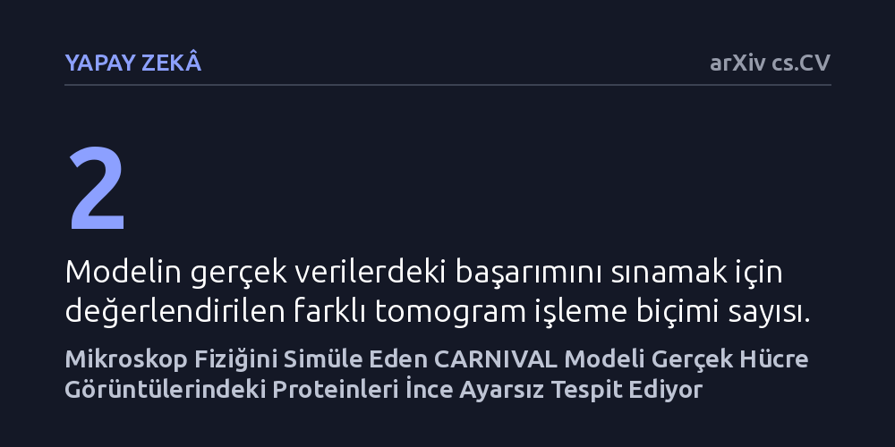

YAPAY-ZEKA · arXiv cs.CV · 2026-09-08
Araştırmacılar, dondurulmuş hücre tomografilerindeki proteinleri tespit etmek için mikroskobun fiziksel bozulmalarını simüle eden CARNIVAL adlı yapay zeka modelini geliştirdi. Yalnızca simülasyonla eğitilen modelin, gerçek tomogramlarda ince ayar yapılmadan dahi mevcut yöntemlerden daha yüksek doğruluk sağladığı gösterildi.
Hücre içi proteinleri tespit etmek için aylarca süren zahmetli insan etiketlemesine gerek kalmadan, yalnızca mikroskop fiziğinin simülasyonuyla yüksek başarımlı modeller eğitilebileceğini gösteriyor.

Hücrelerimizin içinde yaşamı sürdüren milyonlarca protein, son derece yoğun ve dinamik bir moleküler kalabalık içinde çalışır. Kriyoelektron tomografisi (cryo-ET), bu minik yapıları kendi doğal hücresel ortamlarında dondurarak üç boyutlu incelemeyi mümkün kılan kritik bir mikroskopi tekniğidir. Ne var ki elde edilen tomogramlar oldukça yüksek gürültü barındırır ve mikroskobun mekanik sınırları nedeniyle numune her açıdan tam olarak görüntülenemez; bu da görüntülerde belirgin bozulmalar yaratır.
Böylesi karmaşık ve kusurlu hacimlerde hangi proteinin nerede durduğunu saptamak oldukça güçtür. Geleneksel yapay zeka yaklaşımları bu tespiti yapabilmek için uzmanların elle işaretlediği devasa veri kümelerine ihtiyaç duyar. Ancak hücre tomogramlarını tek tek etiketlemek aylar süren zahmetli bir iştir ve insan hatasına açıktır. Bu nedenle araştırmacılar, insan eliyle etiketlemeye bağımlı kalmadan proteinleri doğrudan tanıyabilecek yeni yöntemler arayışındadır.
Yazarlar, mikroskobun görüntüleme sırasında yarattığı fiziksel bozulmaları bir engel olarak görmek yerine bunları yapay zekanın öğrenme sürecinde bir avantaja çevirdi. Mikroskobun optik sınırlarını ve sınırlı eğim açısını taklit eden bir ileri simülasyon modeli kurarak, aynı sanal sahnenin farklı açılardan ve bozulmalardan geçmiş eşleştirilmiş görünümlerini ürettiler.
Geliştirilen CARNIVAL adlı model, LeJEPA özdenetimli öğrenme çerçevesi üzerine inşa edildi. Simülasyon sürecinde proteinlerin uzaydaki kesin konumları ve türleri zaten bilindiği için, bu ayrıcalıklı bilgi model mimarisine ve kayıp fonksiyonuna doğrudan dahil edildi. Böylece yapay zeka, mikroskop kaynaklı gürültülerin ardındaki asıl biyolojik yapıyı kendi kendine ayrıştırmayı öğrendi.
Eğitilen CARNIVAL modeli, hiçbir ek ince ayar yapılmadan doğrudan gerçek kriyoelektron tomogramları üzerinde test edildi. Değerlendirmede, çok sayıda farklı protein türünü ve iki ayrı tomogram işleme tekniğini barındıran standart bir kıyaslama veri seti kullanıldı. Modelden hem protein türlerini doğru sınıflandırması hem de üç boyutlu hacimdeki yerlerini tam olarak tespit etmesi istendi.
Elde edilen sonuçlar, mikroskobun fiziksel bozunumlarını ve simülasyondan gelen ayrıcalıklı konum bilgilerini kullanan CARNIVAL'in, benzer simülasyon verileriyle eğitilmiş mevcut en gelişmiş modelleri geride bıraktığını ortaya koydu. Model, mikroskop kaynaklı şiddetli gürültüye rağmen gerçek hücre verilerindeki hedefleri başarıyla saptamayı başardı.
Bu bulgular, yapısal biyolojideki en büyük darboğazlardan biri olan veri etiketleme krizini aşmak adına umut verici bir yol haritası sunuyor. Mikroskobun fiziksel çalışma prensipleri matematiksel olarak doğru modellendiğinde, gerçek tomogramlarda zahmetli insan işaretlemelerine gerek kalmadan güvenilir modeller eğitilebileceği anlaşılıyor.
Yine de simülasyonların biyolojik çeşitliliğin tamamını kusursuz biçimde yansıtamayabileceği unutulmamalıdır. Bununla birlikte, mikroskop fiziğini öğrenme sürecinin merkezine koyan bu tasarım, hücre içi moleküler mimarinin haritasını çıkarmayı hızlandırmak için sağlam bir temel oluşturuyor.